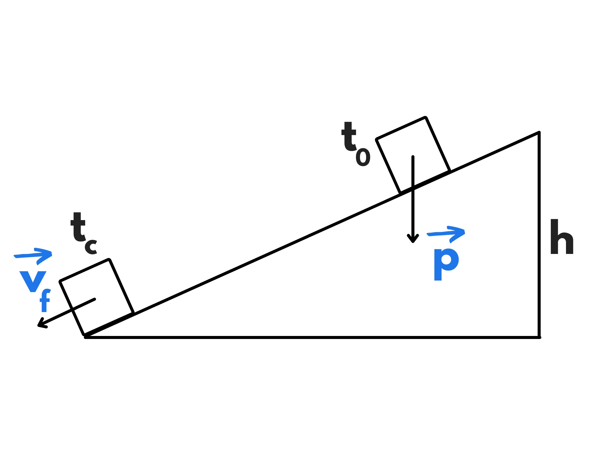
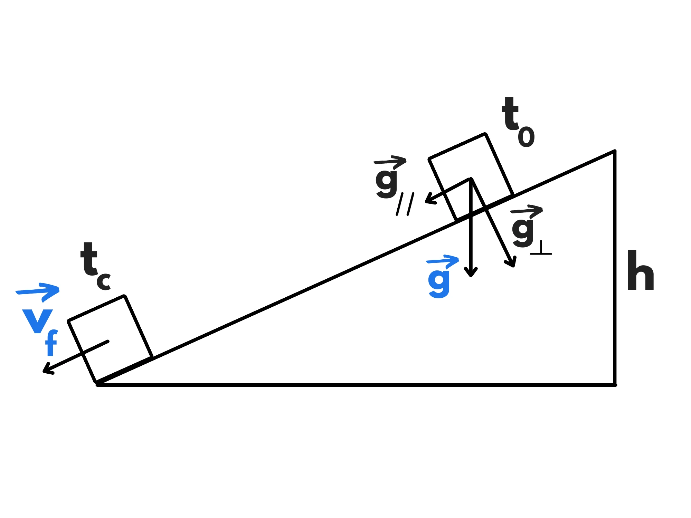

Cosa succede se lasciamo scivolare un corpo su un piano inclinato? Se il piano è liscio (ovvero privo di attrito), il moto effettuato dal corpo è un moto su un piano liscio inclinato. Si tratta, come vedremo, di un caso particolare di moto rettilineo uniformemente accelerato.
Consideriamo il caso in cui il corpo parte da fermo ed è libero di scivolare. La forza di gravità è l’unica forza ad agire su di esso.
Conoscendo l’altezza del piano possiamo calcolare la velocità finale \(v_f\) e conoscendo anche l’inclinazione possiamo calcolare il tempo impiegato \(t_f.\)
Questa volta però l’accelerazione non è uguale all’accelerazione di gravità(\(g\)). Questo perché la forza di gravità punta verso il basso mentre il corpo si sta muovendo obliquamente. Dobbiamo quindi trovare la componente dell’accelerazione sulla direzione del moto, ovvero \(g_{\parallel}\) (\(g\) parallelo).
Si può dimostrare che l’angolo \(\alpha\) è uguale all’angolo \(\gamma\). Di conseguenza, avremo:
\({{g_{\parallel}} \over g} =\sin (\alpha)\)
\(g_{\parallel}=g\cdot \sin(\alpha)\)
Abbiamo quindi trovato la nostra accelerazione (conoscendo l’inclinazione).
Conoscendo l’altezza del piano inclinato e la sua inclinazione possiamo trovare la sua lunghezza. Infatti:
\({h\over l}=\sin(\alpha)\)
\(l={h \over \sin(\alpha)}\)
Imponiamo l’origine alla fine del piano, l’orientamento verso il basso e \(t_0=0.\) Siccome \(S_0\) è all’inizio del piano, sarà uguale a \(–l\). Inoltre, siccome parte da fermo, avremo \(v_0=0.\) Questa volta però, siccome l’orientamento è verso il basso, avremo \(a=g_{\parallel}.\) Quindi la nostra legge oraria sarà:
\(S(t)=S_ 0+v_0(t-t_0)+{a(t-t_0)^2 \over 2}\)
\(S(t)=-l +0 +{g_{\parallel} t^2 \over 2}\)
Nel momento \(t_f\) in cui il corpo giunge alla fine del piano abbiamo \(S(t_f)=0\) (perché abbiamo imposto la fine del piano come origine), quindi:
\(0=-l+{g_{\parallel}{t_f}^2 \over 2}\)
Isoliamo \(t_f:\)
\({g_{\parallel}{t_f}^2 \over 2} = l\)
\({t_f}^2={2l \ \over g_{\parallel}}\)
\(t_f=\sqrt{2l \over g_{\parallel}}\)
Ricordando che \(g_{\parallel}=g\cdot \sin(\alpha)\) e che \(l={h\over \sin(\alpha)}\) , avremo:
\(t_f=\sqrt{{2h\over \sin (\alpha)}\over g \sin (\alpha)}\)
\(t_f=\sqrt{2h\over g \sin (\alpha)^2 }\)
Per trovare invece la velocità finale usiamo la legge oraria della velocità:
\(v(t)=v_0 + a(t-t_0)\)
Che siccome \(v_0=0,\) \(t_0=0\) e \(a=g_{\parallel}\) diventa:
\(v(t)=g_{\parallel} t\)
Quindi al momento \(t_f\) avremo:
\(v(t_f)=g_{\parallel} t_f\)
\(v_f=g_{\parallel} \cdot \sqrt {2h\over {g \sin (\alpha)^2}}\)
\(v_f=\sqrt{2h{g_{\parallel}}^2 \over {g {\sin (\alpha)}^2}}\)
\(v_f=\sqrt{2h g^{2}\sin (\alpha)^2 \over g \sin (\alpha)^2}\)
\(v_f=\sqrt{2hg}\)
Si nota che la velocità finale non è influenzata dall’inclinazione ed è infatti uguale alla velocità finale del moto di caduta libera, che sarebbe il moto su un piano inclinato quando \(\alpha =90^{\circ}\) (ovvero quando il piano è verticale).